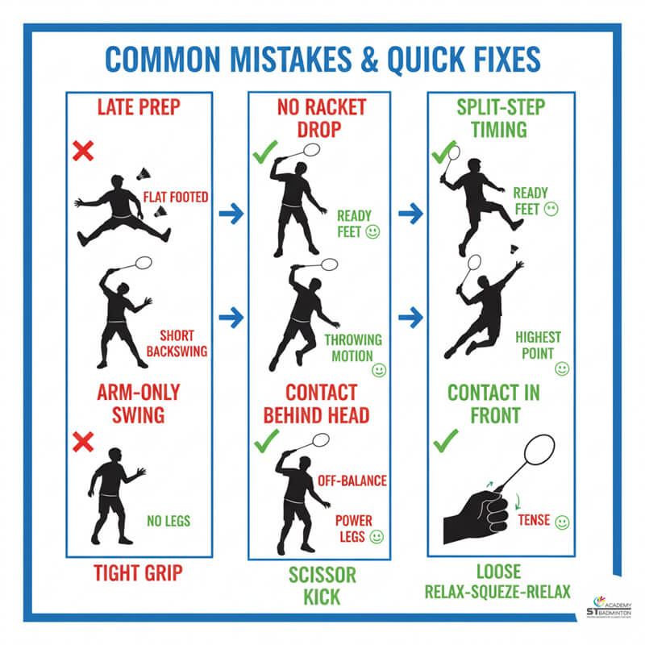

Badminton is a fast sport, so one of the most important things to focus on is your footwork. Try to stay light on your feet and always return to the center of the court after each shot. This helps you react faster to your opponent’s next move and puts you in a better position for the next rally.
Another key skill is learning the correct grip and control of the racket. A relaxed grip gives you better control and allows you to switch between shots more easily. Instead of always trying to hit hard, focus on placing the shuttle accurately. Good placement often wins points more effectively than power, especially in longer rallies.

During matches, try to move your opponent around the court by hitting shots to different areas of the court. Mixing fast smashes with slow drop shots can help you control the pace of the game and keep your opponent guessing. This makes it harder for them to settle into a rhythm and increases your chances of winning points.
It is also important to watch your opponent carefully. Look for weaknesses such as a weaker backhand or slow movement to certain areas, and try to target those areas consistently. Good players adapt their strategy during the match instead of using the same shots repeatedly, which makes them more difficult to beat.
Finally, consistent practice is key to improving in badminton. Focus on drills that improve footwork, reaction time, and consistency over long periods of play. Playing with better players can also help you learn faster by challenging your skills. Staying fit is also important, as badminton requires speed, stamina, and quick reflexes throughout every match.